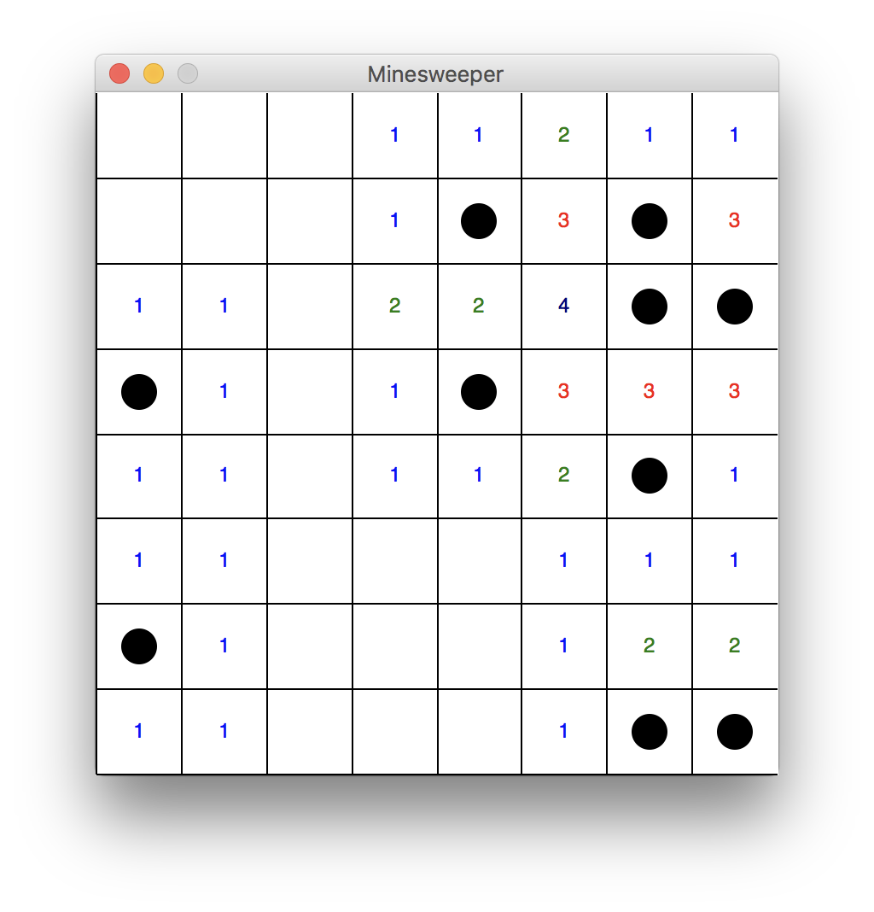

Tree Database
The Project:
In this project, I worked with a partner to turn the Portland Tree dataset into a functioning SQL database with a frontend.
We started by creating an ER diagram to determine what the database would look like.

From there, we began building our schema and uploading the parts of the data to our mysql database.
.png)
Lastly, we learned to query the database and implement a frontend for three queries using PHP.
What I learned:
This project helped understand the steps it takes to design and implement a database. Because we were working with a large dataset, I learned how to properly upload large amounts of information and query the database.
Scrabblebot
The Project:
For my final in Algorithms, we were asked to implement an algorithm to play scrabblebot that would beat an elementary version.
Our group implemented a brute force algorithm that takes combinations of up to four letters and plays them based on their point count.

Our bot, while slow, proved to be extremely effective and scored high agaianst the other bots.
.jpg)
What I learned:
Because we were working in a team, it was really helpful getting to hear from my other teammates and they learn to work with others in this assignment.
Minesweeper
The Project:
One of the biggest projects we had in my CS 172 class was getting to code minesweeper. The project was meant to help us better understand the logic within coding and practice using graphics.
First we created the grid and put mines around the board randomly.

Then we calculated the adjaceny and put it on the board, so that when you click it will reveal how far away you are.
Then when you click a square, it will reveal the adjancy numbers and if you successfully avoid all 10 mines using logic it will display a message saying "You win!" and show the whole board.
If you do click on a mine, it will say "Game over" and show the board with an option to restart.
What I learned:
The most valuable part of this project was learning how to utilize the graphics library to make something interactive and interesting.